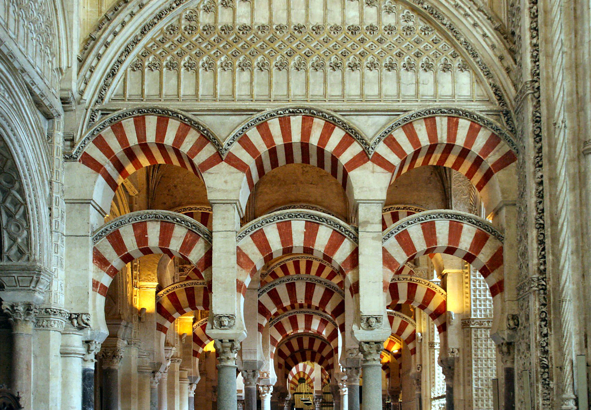

Mezquita-catedral de Córdoba, antes «Santa María
Madre de Dios» o «Gran Mezquita de Córdoba», actualmente
conocida como la Catedral de la Asunción de Nuestra
Señora de forma eclesiástica, es un edificio de la
ciudad de Córdoba, España.
Se empezó a construir como mezquita en el año 786,
con la apropiación por los conquistadores musulmanes de
la basílica hispanorromana de San Vicente Mártir y la
reutilización de parte de los materiales, quedando
reservada al culto musulmán.3 El edificio resultante
fue objeto de ampliaciones durante el Emirato de Córdoba
y el Califato de Córdoba. Con 23 400 metros cuadrados,
fue la segunda mezquita más grande del mundo en superficie,
por detrás de la Mezquita de La Meca, siendo sólo alcanzada
posteriormente por la Mezquita Azul (Estambul, 1588).
Una de sus principales características es que su muro de
la qibla no fue orientado hacia La Meca, sino 51º grados
más hacia el sur, algo habitual en las mezquitas de
al-Ándalus.
En 1238, tras la Reconquista cristiana de la
ciudad, se llevó a cabo su consagración como catedral
de la diócesis con la Ordenación episcopal de su primer
obispo, Lope de Fitero. El edificio alberga el cabildo
catedralicio de la Diócesis de Córdoba, y por su carácter
de templo católico y sede episcopal, está reservado al
culto católico. En 1523, bajo la dirección de los
arquitectos Hernán Ruiz, el Viejo y su hijo, se
construyó su basílica cruciforme renacentista de
estilo plateresco.
Hoy todo el conjunto constituye el monumento más
importante de Córdoba, y también de toda la
arquitectura andalusí, junto con la Alhambra,
así como el más emblemático del arte omeya hispanomusulmán.
Declarada como Bien de interés cultural y
Patrimonio Cultural de la Humanidad como parte del
centro histórico de la ciudad, se incluyó por el
público entre los 12 Tesoros de España en 2007 y
fue premiada como el mejor sitio de interés turístico
de Europa y sexto del mundo según un concurso de
TripAdvisor. En 2018 rozó los dos millones de visitantes,
siendo su récord histórico y convirtiéndolo en uno
de los monumentos más visitados de España.